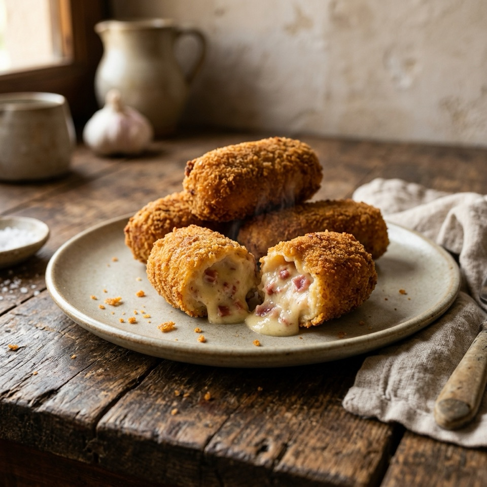
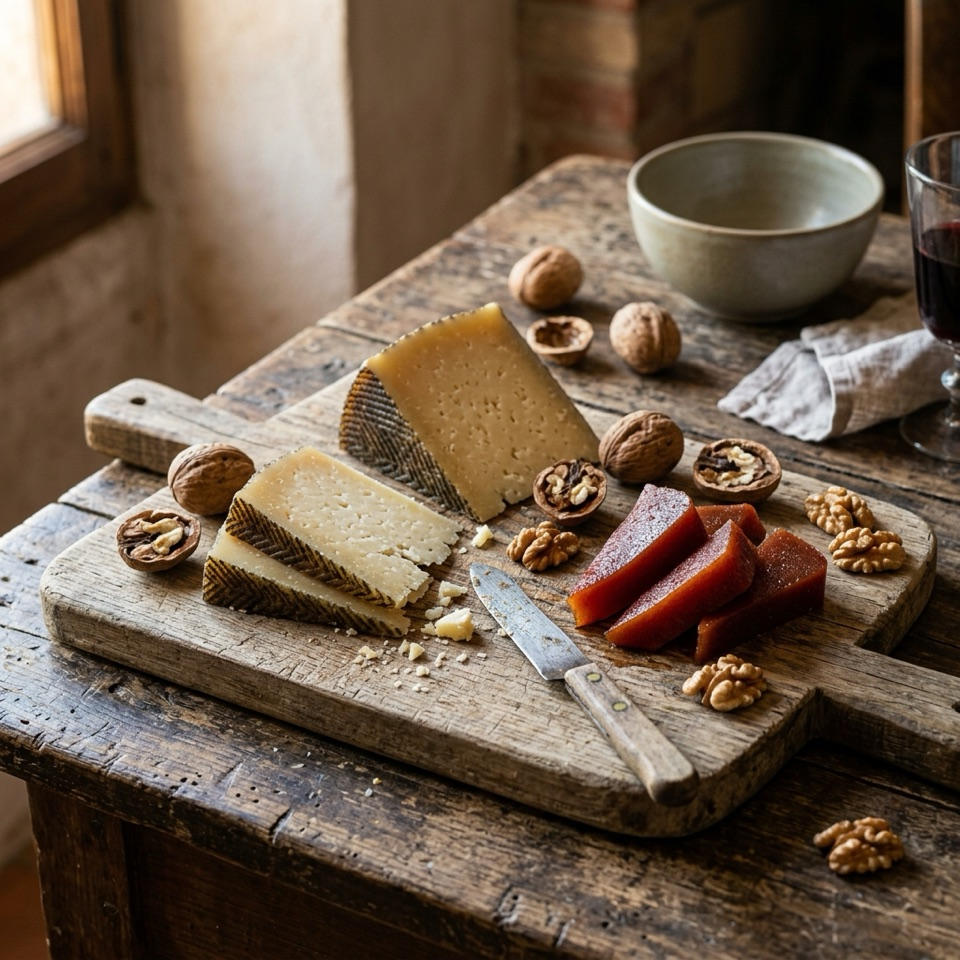
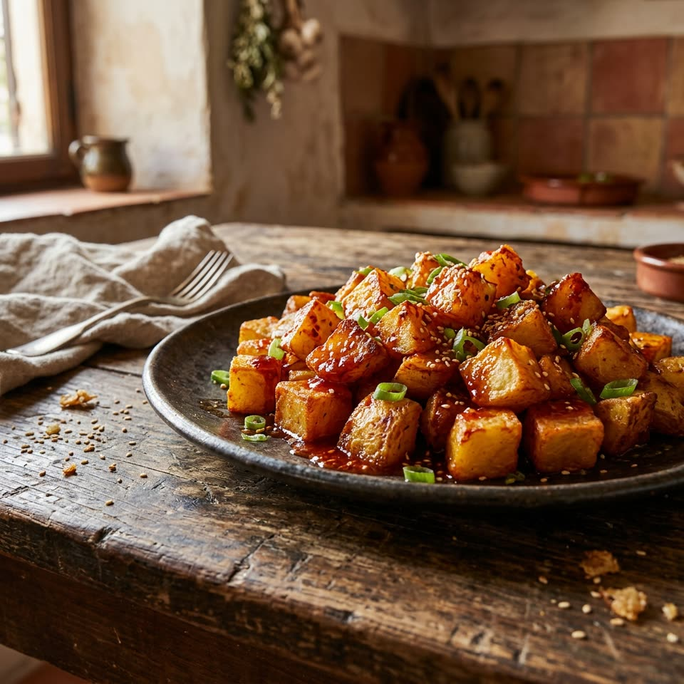
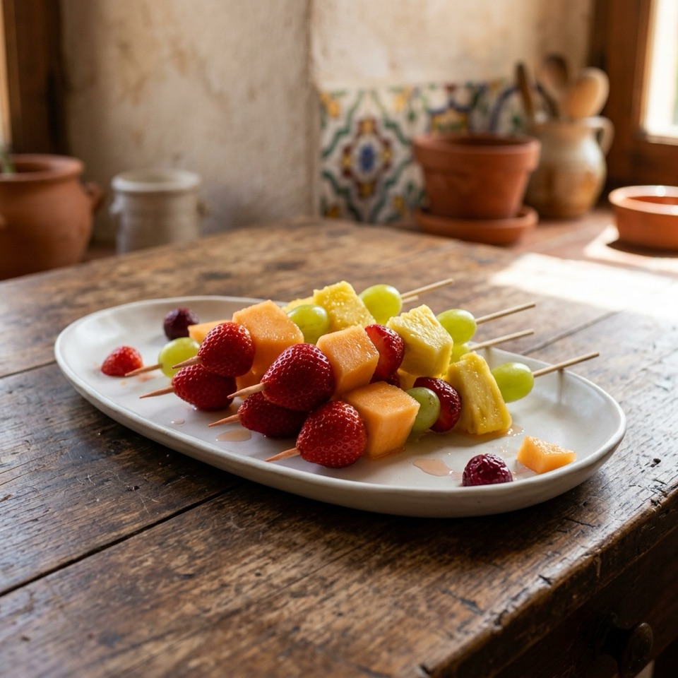

Principal
Chili con carne
Chili espeso de ternera picada, alubias rojas y tomate, con el toque ahumado del chipotle. Se cocina despacio hasta quedar aterciopelado. Se sirve con nata agria y queso rallado aparte, a elegir.
Puede contener:Lácteos
Cada plato con sus alérgenos. Filtra si necesitas algo sin gluten o vegano.
«Receta sin gluten»: ningún ingrediente lleva gluten, pero se cocina en la misma cocina que platos con gluten.
Principal
Chili espeso de ternera picada, alubias rojas y tomate, con el toque ahumado del chipotle. Se cocina despacio hasta quedar aterciopelado. Se sirve con nata agria y queso rallado aparte, a elegir.

Principal
Arroz con verduras de temporada, judías verdes, alcachofa y pimiento, cocinado en paella con azafrán.

Entrante
Tortilla jugosa de patata y cebolla, cortada en dados y pinchada con palillo, lista para servir.

Entrante
Pan de cristal tostado con tomate rallado, aceite de oliva virgen extra y lonchas finas de jamón serrano.

Entrante
Croquetas cremosas de bechamel con jamón, rebozadas en pan rallado y fritas al momento.

Entrante
Cuñas de queso manchego curado con dulce de membrillo y nueces.

Entrante
Ensaladilla de patata, zanahoria, guisantes y huevo con mayonesa casera, servida en vasitos individuales.

Guarnición
Patatas amarillas con piel, doradas al horno y envueltas en una salsa de chile dulce con ajo y cebolla roja.

Guarnición
Ensalada fresca de repollo, zanahoria y cebolla, aliñada con mayonesa y un chorrito de vinagre.

Postre
Brownies intensos de chocolate negro y nueces, sin harina: la textura la da la fécula de patata.

Postre
Brochetas de fruta de temporada: fresa, melón, piña y uva.